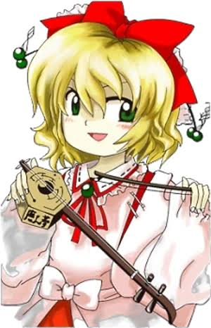

Touhou Project
Touhou Project — это известная серия японских игр в жанре даммаку (аркада на выживание в потоке выстрелов), созданная разработчиком под псевдонимом ZUN. Первая игра вышла ещё в 1996 году, и с тех пор серия выросла в огромную вселенную.

Первые 12 частей серии
Мир Генсокё
Действие всех игр разворачивается в Генсокё — волшебной стране, отделённой от нашего мира магическим барьером. Здесь бок о бок живут люди, феи, боги и существа из японского фольклора (ёкаи). Когда в Генсокё происходит очередной таинственный инцидент, героини отправляются на поиски виновников.

Главные Героини
Нажмите на имя персонажа, чтобы открыть страницу с подробным описанием:
- Рейму Хакурей — жрица храма Хакурей.
- Мариса Кирисаме — обычная волшебница.
Другие персонажи
Нажмите на имя персонажа, чтобы открыть страницу с подробным описанием:
- Чирно — ледяная фея, живущая около Туманного Озера.
- Сёстры Скарлет — обитатели Особняка Алой Дьяволицы.
Почему серия популярна
Игры славятся красивыми и сложными узорами из снарядов, уникальной атмосферой японской мифологии и запоминающейся музыкой, которую автор серии пишет самостоятельно.
Несколько знаковых игр серии
| Год | Название | Чем известна |
|---|---|---|
| 2002 | Embodiment of Scarlet Devil | Первая игра для Windows и дебют сестёр Скарлет. |
| 2003 | Perfect Cherry Blossom | Одна из самых популярных частей с весенней тематикой. |
| 2004 | Imperishable Night | Игра с механикой смены дня и ночи и парными персонажами. |
Это лишь несколько наиболее известных частей — всего в серии на данный момент более 30 игр, включая спин-оффы
Интересные факты
- Истоки на PC-98. Первые пять игр серии вышли в 1996–1998 годах для японских компьютеров NEC PC-98. В то время создатель серии ZUN состоял в студенческом кружке Amusement Makers. События этих пяти игр часто не считают частью основного современного канона, хотя часть персонажей и мотивов из них всё же перекочевала в дальнейшую историю.
- Рождение Team Shanghai Alice. После окончания университета и ухода из Amusement Makers ZUN (Дзюнъя Ота) основал независимый додзин-кружок Team Shanghai Alice. По сей день он остаётся его единственным официальным участником. Название кружка выступает скорее как творческий псевдоним автора: это творческое объединение без статуса юридического лица.
- Первая игра — не даммаку. Touhou Reiiden ~ The Highly Responsive to Prayers (ноябрь 1996) на самом деле была арканоидом: персонаж отбивал мяч и разбивал блоки. Жанр «даммаку» появился только во второй игре серии The Story of Eastern Wonderland (август 1997), и затем с переходом на Windows в 2002 году она обрела привычный вид.
- Вырезанная героиня. В Embodiment of Scarlet Devil должна была появиться третья играбельная героиня — Рин Сацуки (冴月麟, Rin Satsuki). Её вырезали из-за нехватки времени, но в исполняемом файле игры остался след: хекс-код
8D E1 8C 8E 20 97 D9(кодировка Shift-JIS) рядом с кодом Рейму и Марисы, а также два типа атак — «Цветок» (花) и «Ветер» (風). Сейчас Рин — один из самых известных «призраков» в истории серии.
Фанатский облик Рин Сацуки, вдохновлённый силуэтом с постера Team Shanghai Alice для Comic Market 62 (2002). Согласно замечанию ZUN, его рисунок, вероятно, был сделан как импровизация или «талисман кружка», а не как официальный дизайн персонажа.
Фанатское творчество и мемы
Вокруг игры сформировалось огромное сообщество, которое создаёт фан-арты, музыкальные ремиксы и забавные анимации. Перейти в галерею фан-артов и гифок →